此为笔者在学习河海大学徐青老师等的mooc《卫星海洋学》时做的一些整理，遇到不懂的地方会参考中国海洋大学刘玉光等的《卫星海洋学》和蒋兴伟院士组织翻译的西利·马丁的《海洋遥感导论》的相关内容。
1 绪论
1.2 遥感技术
Type/Window
Visible
Infrared
Microwave
Passive
X
X
X
Active
X
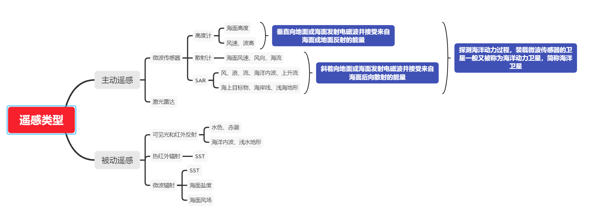
2 卫星轨道与分辨率
2.1 卫星轨道(1)
2.2 卫星轨道(2)
重复周期
传感器的再访问时间≤传感器的重复周期≤卫星的重复周期
3 气象卫星与水色卫星
3.1 气象卫星和主要传感器
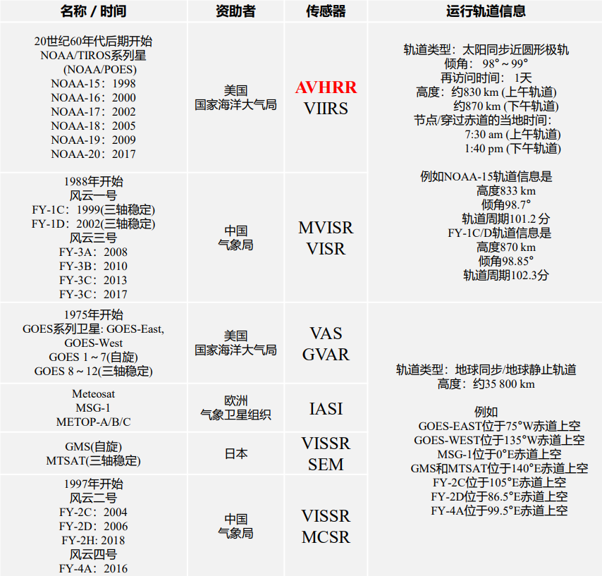
3.2 水色卫星和主要传感器
4 海洋卫星
4.1 海洋卫星简介
高度计
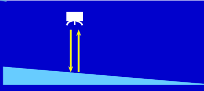
搭载高度计的卫星，黄色部分为高度计专用卫星，运行在高度计卫星轨道：
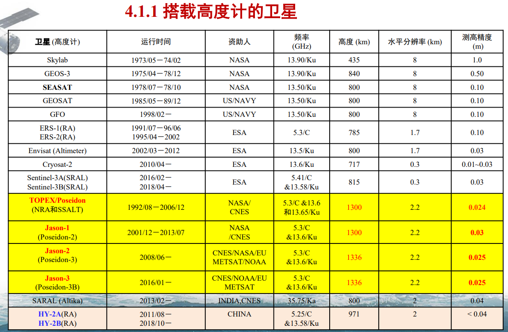
散射计
与高度计不同，散射计为宽刈幅主动雷达。
装载散射计的卫星，黄色部分在轨运行
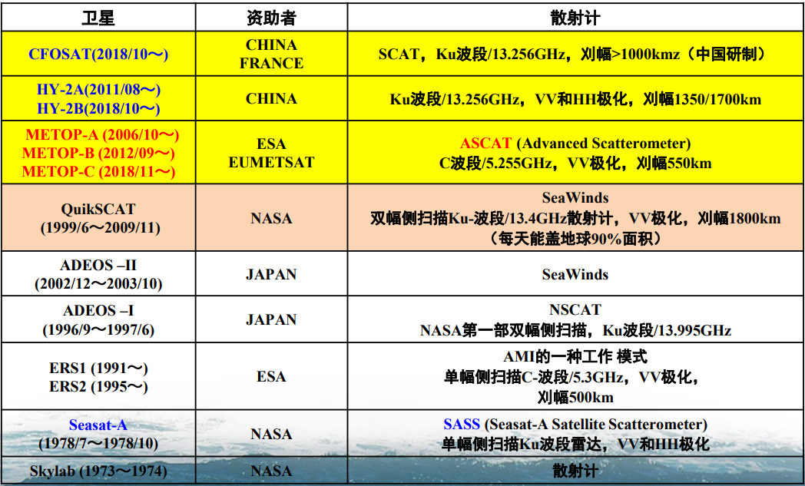
SAR卫星
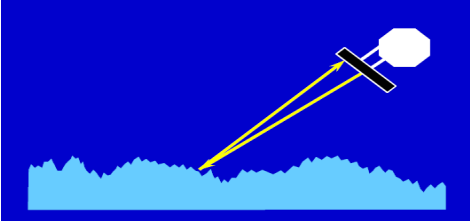
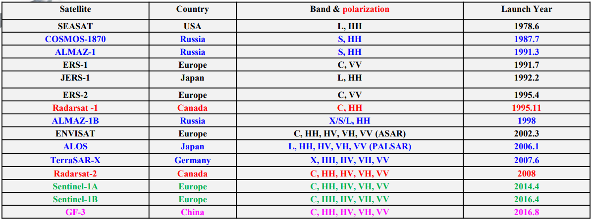
微波辐射计
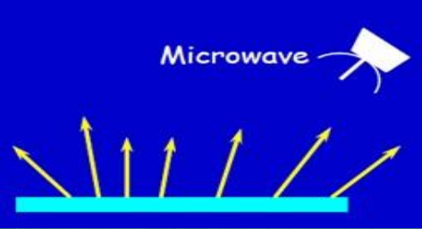
4.2 中国海洋卫星的发展
均为太阳同步极轨卫星
风云三号系列气象卫星上也装载了兼具全球水色观测能力的中分辨率成像光谱仪
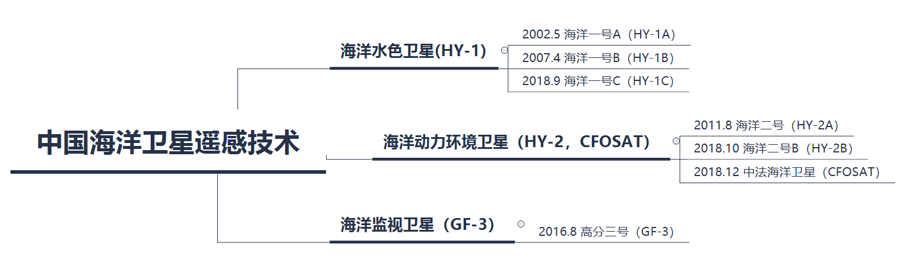
海洋水色卫星：HY-1卫星
HY-1A
HY-1B
HY-1C
1C/D卫星工程上采用上、下午卫星组网，可增加观测次数，提高全球覆盖能力
有效载荷：
十波段海洋水色扫描仪COCTS：信噪比大幅提升
四波段海岸带成像仪CZl
分辨率由250m提高至50m
刈幅由500km扩展至1000km
紫外成像仪
星上定标光谱仪
船舶自动识别系统
卫星技术状态达到了国际先进水平,使中国成为继美国之后,能提供每天全球海洋空间全覆盖海洋水色卫星资料的国家。
海洋动力环境卫星：HY-2卫星
HY-2A
我国第一颗海洋动力环境卫星
有效载荷：
雷达高度计
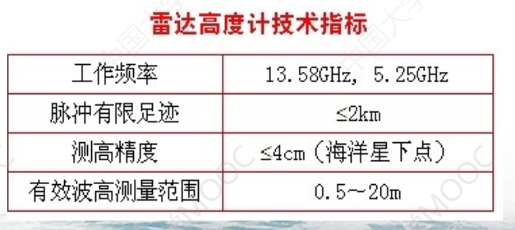
微波散射计
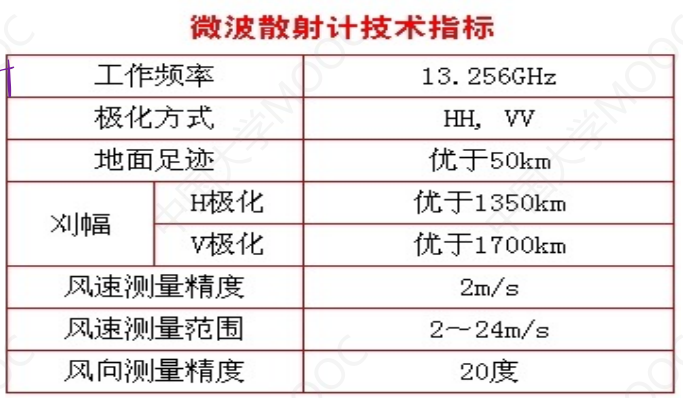
扫描微波辐射计
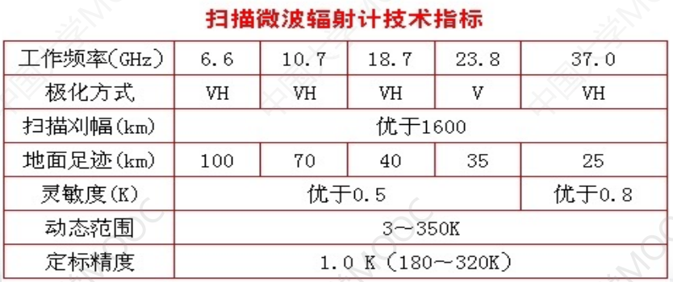
HY-2B
我国第二颗海洋动力环境卫星
有效载荷（相比于2A）：
CFOSAT
中法两国合作研制的首颗卫星
中国提供：
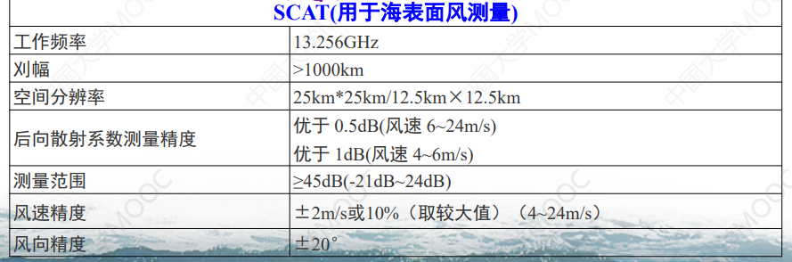
法国提供：
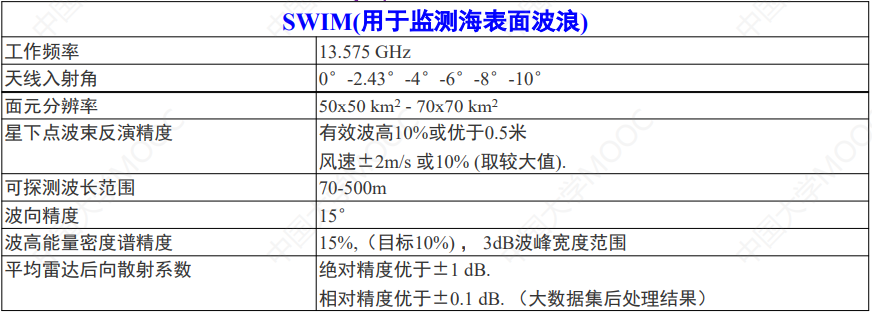
海洋监视监测卫星：GF-3卫星
5 电磁辐射
5.1 电磁波的波段与波动方程
电磁波的波段
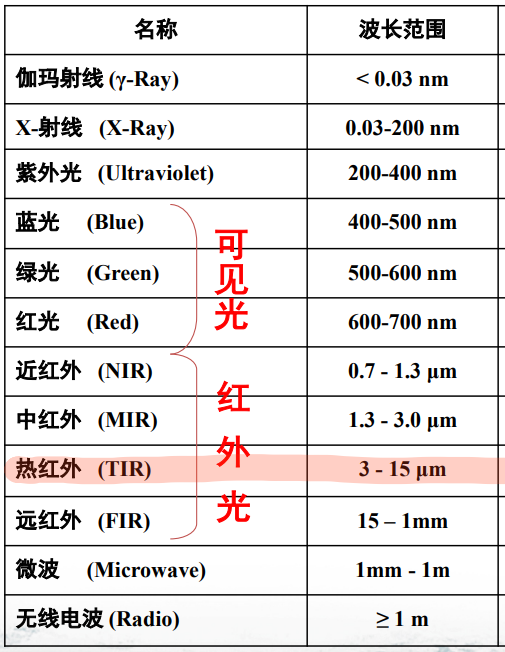
微波波段
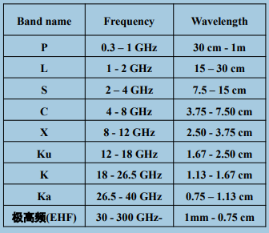
复折射率n
实部n ′ n' n ′
虚部n ′ ′ n'' n ′′
n = n ′ − i ⋅ n ′ ′ \boldsymbol{n}=n'-i\cdot n''
n = n ′ − i ⋅ n ′′
5.2 辐射术语 ①
5.2.1 极化(Polarization)
定义：如果一束平面电磁波的电场矢量都在一个平面内,则称之为线性极化或线性偏振的。
任何线性极化的电磁波都可分解为两个部分:
水平极化(horizontal polarization)
垂直极化(vertical polarization)
极化状态根据电场方向与参考平面的关系来定义
参考平面：由两条直线确定,一条是海表面的垂线OZ,另一条是入射或离开海面的电磁波束所在的直线
水平极化：电场矢量与参考平面垂直
垂直极化：电场矢量位于参考平面内或与参考平面平行
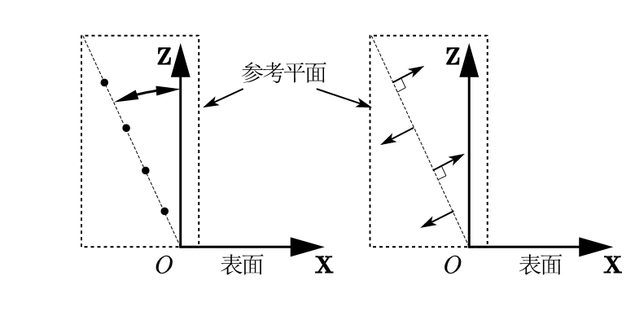
5.2.2 立体角(Solid Angle of Observation)和观测的天顶角
图5-2显示了立体角 的定义。如图所示,A代表波源，dA 代表辐射电磁波的微分面积元。假设电磁波从波源 dA 自发辐射，到达半径为R的球面的一个波束对应着一个立体角微分元。该立体角微分元对应的小面积元是：
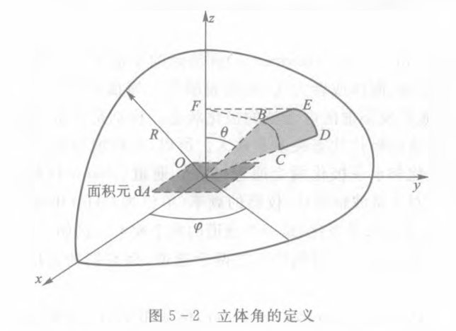
$$
\text{d}S=\overline{BE}\cdot \overline{BC}=\left( \overline{FB}\text{d}\varphi \right) \cdot \left( \overline{OB}\text{d}\theta \right)
$$
= ( O B ‾ sin θ d φ ) ⋅ ( O B ‾ d θ ) =\left( \overline{OB}\sin \theta \text{d}\varphi \right) \cdot \left( \overline{OB}\text{d}\theta \right)
= ( OB sin θ d φ ) ⋅ ( OB d θ )
= R 2 sin θ d θ d φ ( 5 − 5 ) =R^2\sin \theta \text{d}\theta \text{d}\varphi \ \ \ \ \left( 5-5 \right)
= R 2 sin θ d θ d φ ( 5 − 5 )
立体角的微分 d Ω \text{d}\Omega d Ω
d Ω = d S R 2 = sin θ d θ d φ ( 5 − 6 ) \text{d}\Omega =\frac{\text{d}S}{R^2}=\sin \theta \text{d}\theta \text{d}\varphi \ \ \ \ \ \ \ \ \ \ \ \ \ \ \ \ \ \ \ \ \ \ \ \left( 5-6 \right)
d Ω = R 2 d S = sin θ d θ d φ ( 5 − 6 )
式中立体角Ω \varOmega Ω
Ω = ∫ Ω d Ω = ∫ 0 2 π d φ ∫ 0 π sin θ d θ = 4 π sr ( 5 − 7 ) \varOmega =\int_{\varOmega}^{}{\text{d}\varOmega =\int_0^{2\pi}{\text{d}\varphi \int_0^{\pi}{\sin \theta \text{d}\theta =4\pi \ \text{sr}}}}\ \ \ \ \ \ \ \ \ \ \ \ \ \ \ \left( 5-7 \right)
Ω = ∫ Ω d Ω = ∫ 0 2 π d φ ∫ 0 π sin θ d θ = 4 π sr ( 5 − 7 )
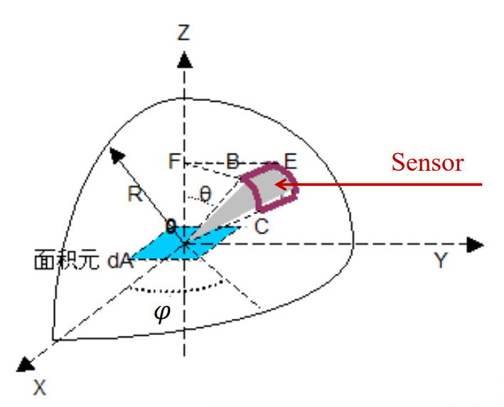
卫星/观测的天顶角(satellite zenith angle) b
描述卫星观测方向与被观测海面法线之间的夹角(对雷达,也称入射角)
太阳天顶角(solar zenith angle) c
代表太阳到被观测海面的光束方向与被观测海面法线之间的夹角
观测角/入射角(view angle) a
描述卫星观测方向与星下点海面法线之间的夹角
5.3 辐射术语 ②
5.3.1 辐射专业术语
辐射能 Q （Radiant Energy）
辐射能量的多少，单位：焦耳 [J]
辐射通量 Φ （Radiant Flux）
单位时间里通过一个面积的能量，单位是 W(瓦特，1 W = 1 J ⋅ s − 1 1\text{W}=1\text{J}\cdot \text{s}^{-1} 1 W = 1 J ⋅ s − 1
Φ = d Q d t ( 5 − 8 ) \varPhi =\frac{\text{d}Q}{\text{d}t}\ \ \ \ \ \ \ \ \ \ \ \ \ \ \ \ \left( 5-8 \right)
Φ = d t d Q ( 5 − 8 )
辐射强度 I
点光源在特定方向上单位立体角的辐射通量 ，单位是 W ⋅ sr − 1 \text{W}\cdot \text{sr}^{-1} W ⋅ sr − 1
I = d Φ d Ω ( 5 − 9 ) I=\frac{\text{d}\varPhi}{\text{d}\Omega}\ \ \ \ \ \ \ \ \ \ \ \ \ \ \ \ \ \ \ \left( 5-9 \right)
I = d Ω d Φ ( 5 − 9 )
辐亮度 L
沿辐射方向单位面积和单位立体角的辐射通量
L ( θ , φ ) = d 2 Φ d A d Ω cos θ ( 5 − 10 ) L\left( \theta ,\varphi \right) =\frac{\text{d}^2\varPhi}{\text{d}A\text{d}\varOmega \cos \theta}\ \ \ \ \ \ \ \ \ \ \ \ \ \ \ \ \ \left( 5-10 \right)
L ( θ , φ ) = d A d Ω cos θ d 2 Φ ( 5 − 10 )
式中 θ \theta θ d A c o s θ dAcos\theta d A cos θ L L L W ⋅ m 2 ⋅ sr − 1 \text{W}\cdot \text{m}^2\cdot \text{sr}^{-1} W ⋅ m 2 ⋅ sr − 1
对于本概念的形象理解参考 ：tab 海洋遥感导论(修订版)
摘自《海洋遥感导论(修订版)》P83-85
辐亮度(radiance) L L L W/ ( m 2 ⋅ sr ) \text{W/}\left( \text{m}^2\cdot \text{sr} \right) W/ ( m 2 ⋅ sr ) d Ω \text{d}\Omega d Ω 它的价值在于描述了从任意方向指向一个平面的管筒收集到的辐射通量 ,这正是描述卫星传感器观测地球表面的方法之一 。从一个与辐射传播方向夹角为 θ \theta θ d A \text{d}A d A
L = d 2 Φ d Ω d A cos θ ( 3.15 ) L=\frac{\text{d}^2\Phi}{\text{d}\Omega \text{d}A\cos \theta}\ \ \ \ \ \ \ \ \ \ \ \ \ \ \ \ \ \ \ \ \ \ \ \ \left( 3.15 \right)
L = d Ω d A cos θ d 2 Φ ( 3.15 )
图3.8给出了一个管状辐亮度计(注:也称为辐射计)指向一个表面的示意图。这个仪器捕获从面元 Δ A \Delta A Δ A Δ Ω \Delta \Omega ΔΩ Δ A \Delta A Δ A θ \theta θ Δ A cos θ \Delta A\cos \theta Δ A cos θ
L = Δ 2 Φ Δ Ω Δ A cos θ ( 3.16 ) L=\frac{\Delta ^2\Phi}{\Delta \Omega \Delta A\cos \theta}\ \ \ \ \ \ \ \ \ \ \ \ \ \ \ \ \ \ \ \ \ \ \ \ \left( 3.16 \right)
L = ΔΩΔ A cos θ Δ 2 Φ ( 3.16 )
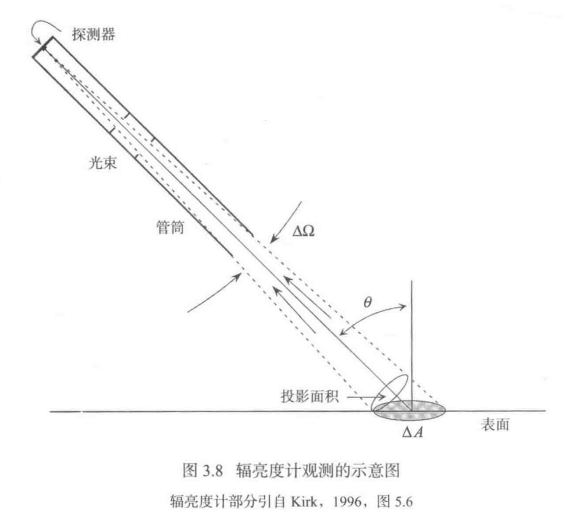
在海洋学上具有重要意义的几个表面辐亮度均与观测角度无关,使用这个术语有很多方便之处,因此辐亮度这个概念将在以后的章节里频繁使用。
传统上,发射的辐射能量称作辐亮度,用符号 L L L B B B B B B L L L θ = 0 \theta=0 θ = 0
辐亮度的概念可能在理解上比较困难。为了对辐亮度进行更好地理解,以下各节首先讨论一些辐射表面有用的近似、定义和特性,然后使用辐亮度描述理想光学仪器的操作并以例子进行小结。如以下各节所示,辐亮度可以被理解为是由一个朝向延展平面的管筒收集到的辐射通量,辐亮度是应用于这一概念的自然单位,且其对应于由一个卫星传感器收集到的辐射通量。
辐照度 E
单位面积的辐射通量
E = d Φ d A ( 5 − 12 ) E=\frac{\text{d}\varPhi}{\text{d}A}\ \ \ \ \ \ \ \ \ \ \ \ \ \ \ \ \ \ \ \ \ \ \ \ \left( 5-12 \right)
E = d A d Φ ( 5 − 12 )
根据定义，辐照度 E E E L L L
E = ∫ 0 2 π d φ ∫ 0 π / 2 L ( θ , φ ) cos θ sin θ d θ = ∫ Ω L ( θ , φ ) cos θ d Ω E=\int_0^{2\pi}{\text{d}}\varphi \int_0^{\pi /2}{L\left( \theta ,\varphi \right) \cos \theta \sin \theta \text{d}}\theta =\int_{\varOmega}^{}{L\left( \theta ,\varphi \right) \cos \theta \text{d}\Omega}
E = ∫ 0 2 π d φ ∫ 0 π /2 L ( θ , φ ) cos θ sin θ d θ = ∫ Ω L ( θ , φ ) cos θ d Ω
对于本概念的形象理解参考 ：tab 海洋遥感导论(修订版)
摘自《海洋遥感导论(修订版)》P82-83
本书主要使用的是平面辐照度，其由各个方向人射到平面上侧或从平面下侧出射的通量构成 ，某一方向的通量对平面辐照度的贡献权重为其与该平面垂线方向的夹角余弦。平面辐照度就是 一个平板传感器收集到的辐射。
想象一个放置在海洋表面的 1m 2 \text{m}^2 m 2 Δ A \Delta A Δ A Δ Φ / Δ A \Delta \Phi /\Delta A ΔΦ/Δ A θ \theta θ Δ A \Delta A Δ A c o s θ cos\theta cos θ c o s θ cos\theta cos θ c o s θ cos\theta cos θ E u E_u E u E d E_d E d
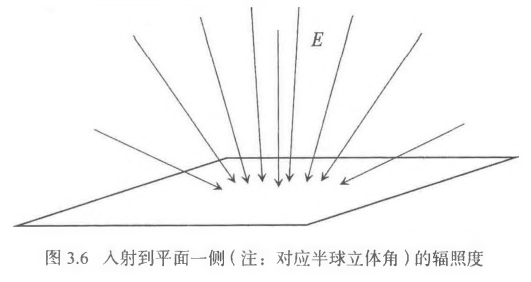
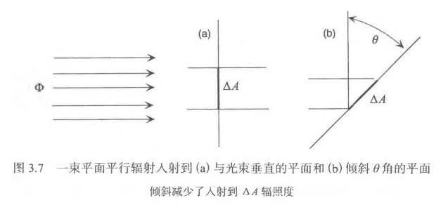
发射率 e(λ) (emissivity)
定义 ：
e ( λ ) = E E B L A C K E B L A C K : 与物体具有相同温度的黑体自发辐射的辐照度 e\left( \lambda \right) =\frac{E}{E_{BLACK}}\ \ \ \ \ \ \ E_{BLACK}:与物体具有相同温度的黑体自发辐射的辐照度
e ( λ ) = E B L A C K E E B L A C K : 与物体具有相同温度的黑体自发辐射的辐照度
在更细致的研究中，发射率可以被定义为物体发射的辐亮度 L ( λ , θ , φ ) L(\lambda,\theta,\varphi) L ( λ , θ , φ ) L b l a c k ( λ , θ , φ ) L_{black}\left( \lambda ,\theta ,\varphi \right) L b l a c k ( λ , θ , φ )
e ( λ , θ , φ ) = L ( λ , θ , φ ) L b l a c k ( λ , θ , φ ) ( 5 − 21 ) e\left( \lambda ,\theta ,\varphi \right) =\frac{L\left( \lambda ,\theta ,\varphi \right)}{L_{black}\left( \lambda ,\theta ,\varphi \right)}\ \ \ \ \ \ \ \ \ \ \ \ \ \ \ \ \ \left( 5-21 \right)
e ( λ , θ , φ ) = L b l a c k ( λ , θ , φ ) L ( λ , θ , φ ) ( 5 − 21 )
公式（5-21）定义的发射率在遥感学科中有广泛的用途。发射率的这一定义是基尔霍夫（Kirchoff）在19世纪总结出的，公式（5-21） 在许多物理教科书中被称为基尔霍夫定律。
L ( λ , θ , φ , T ) = e ( λ , θ , φ ) L ( λ , θ , φ , T ) ∣ B L A C K L\left( \lambda ,\theta ,\varphi ,T \right) =e\left( \lambda ,\theta ,\varphi \right) L\left( \lambda ,\theta ,\varphi ,T \right) \mid_{BLACK}^{}
L ( λ , θ , φ , T ) = e ( λ , θ , φ ) L ( λ , θ , φ , T ) ∣ B L A C K
L ( λ , θ , φ , T ) ∣ B L A C K L\left( \lambda ,\theta ,\varphi ,T \right) \mid_{BLACK}^{} L ( λ , θ , φ , T ) ∣ B L A C K 灰体的发射率 — 可通过菲涅耳反射率计算 e ( λ , θ , φ ) = 1 − ρ ( λ , θ , φ ) e(\lambda, \theta, \varphi)=1-\rho(\lambda, \theta, \varphi) e ( λ , θ , φ ) = 1 − ρ ( λ , θ , φ )
上述公式能够解释许多海洋大气的遥感理论问题， 是目前海洋遥感最常见的公式之一
5.3.2 朗伯表面(Lambert surface)
使用 L L L L L L φ \varphi φ θ \theta θ ，这样的表面被称为朗伯表面(Lambert surface) 。
朗伯定律 (Lambert law) 表达的事实是：朗伯表面从不同方向看是一样亮的。对应于面积是 A A A 的朗伯表面，辐射通量是
Φ = ∫ A d A ∫ Ω L cos θ d Ω = A L ∫ Ω cos θ d Ω = A L ∫ 0 2 π d φ ∫ 0 π / 2 cos θ sin θ d θ = π A L ( 5 − 29 ) \Phi =\int_A{\text{d}}A\int_{\Omega}{L}\cos \theta \text{d}\Omega =AL\int_{\Omega}{\cos}\theta \text{d}\Omega =AL\int_0^{2\pi}{\text{d}}\varphi \int_0^{\pi /2}{\cos}\theta \sin \theta \text{d}\theta =\pi AL\ \ \ \ \ \ \ \ \ \ \left( 5-29 \right)
Φ = ∫ A d A ∫ Ω L cos θ d Ω = A L ∫ Ω cos θ d Ω = A L ∫ 0 2 π d φ ∫ 0 π /2 cos θ sin θ d θ = π A L ( 5 − 29 )
朗伯表面自发辐射或反射的辐亮度是
L = Φ π A ( 5 − 30 ) L=\frac{\varPhi}{\pi A}\ \ \ \ \ \ \ \ \ \ \ \ \ \ \ \ \ \ \ \ \ \left( 5-30 \right)
L = π A Φ ( 5 − 30 )
朗伯表面自发辐射或反射的辐照度是
E = Φ A ( 5 − 31 ) E=\frac{\varPhi}{A}\ \ \ \ \ \ \ \ \ \ \ \ \ \ \ \ \ \ \ \ \ \ \left( 5-31 \right)
E = A Φ ( 5 − 31 )
由(5 -30)式和(5 -31)式可知，朗伯表面反射的辐照度与辐亮度之比等于 π \pi π
具有朗伯表面的辐射物体也称为余弦辐射体(cosine radiator)。公式(5 -30) 表明，余弦辐射体的辐亮度L在各方向上相等且与 θ \theta θ 辐射强度 I ( θ ) I(\theta) I ( θ ) θ \theta θ ：
I ( θ ) = ∫ A L cos θ d A = L A cos θ = Φ π cos θ = I 0 cos θ ( 5 − 32 ) I\left( \theta \right) =\int_A^{}{L\cos \theta \text{d}A=LA\cos \theta =\frac{\varPhi}{\pi}\cos \theta =I_0\cos \theta \ \ \ \ \ \ \ \ \ \ \ \ \ \ \ \ \ \ \ \ \ \left( 5-32 \right)}
I ( θ ) = ∫ A L cos θ d A = L A cos θ = π Φ cos θ = I 0 cos θ ( 5 − 32 )
所以，朗伯定律也称为朗伯余弦定律(Lambert cosine law) 。
摘自《海洋遥感导论(修订版)》P85
朗伯面具有出射辐亮度与方向无关的有用特性，如本章和后续章节所示, 这些表面在可见光与红外海洋遥感领域具有特别的重要性。朗伯面这个术语也可用于反射体，例如，泡沫和云可以认为是朗伯的或太阳光的朗伯反射体， 即在可见光与红外（VIR）波段内，反射的辐亮度在很大的观测角范围内与方向无关 。对于一个平面朗伯面来说，辐照度 E E E L L L L L L E E E
E = d Φ d A = L ∫ 0 2 π d φ ∫ 0 π / 2 cos θ sin θ d θ = π L ( 3.17 ) E=\frac{\text{d}\Phi}{\text{d}A}=L\int_0^{2\pi}{\text{d}}\varphi \int_0^{\pi /2}{\cos}\theta \sin \theta \text{d}\theta =\pi L\ \ \ \ \ \ \ \ \ \ \ \ \ \ \ \ \ \ \ \ \ \ \ \ \ \left( 3.17 \right)
E = d A d Φ = L ∫ 0 2 π d φ ∫ 0 π /2 cos θ sin θ d θ = π L ( 3.17 )
注：原书中有错 θ \theta θ φ \varphi φ
5.4 基尔霍夫定律
基尔霍夫定律(Kirchhoff,1859)基本表达:
如果介质处于局部热力学平衡条件下，那么它吸收能量的速率和辐射能量的速率相等，即
e ( λ ) = a ( λ ) e\left( \lambda \right) =a\left( \lambda \right)
e ( λ ) = a ( λ )
既可应用于两介质界面处，也可应用于某介质内部
基尔霍夫定律是海表面物理量遥感机理的基础之一
地球表面温度变化的时间尺度 >> 遥感仪器的一次测量需要的时间区间，因此，在遥感计算中，地球表面的局部热力学平衡条件得到普遍满足。
推广公式 1—适用于两介质界面处
e ( λ , θ , φ ) = 1 − ρ ( λ , θ , φ ) e\left( \lambda ,\theta ,\varphi \right) =1-\rho \left( \lambda ,\theta ,\varphi \right)
e ( λ , θ , φ ) = 1 − ρ ( λ , θ , φ )
e e e ρ \rho ρ 此公式仅适用于两介质界面处，它表达在局部热力学平衡条件下，除掉反射的部分以外，所有吸收的能量都被发射出去了
在海表面温度、海表面盐度和海面风的遥感中，经常使用这个公式，在海洋遥感中是极其重要的定律 ，是海表面物理量遥感机理的基础之一。
推广公式 2—适用于介质内部
e ( λ , θ ) = 1 − t ( λ , θ ) e\left( \lambda ,\theta \right) =1-t\left( \lambda ,\theta \right)
e ( λ , θ ) = 1 − t ( λ , θ )
此公式仅适用于介质内部
它表现了大气吸收带的发射率特征，可应用于大气垂直剖面温度和湿度的遥感
5.5 黑体辐射
5.5.1 黑体(Blackbody)
黑体 ：发射率 e = 1 e=1 e = 1
灰体 ：物体的发射率 e < 1 e<1 e < 1 e e e
在可见光和近红外波段
地球和太阳表面的发射率接近1
地球和太阳可以近似地看作黑体
但是，由于较高的精度要求，光学遥感中不能将地球当做黑体
微波波段
地球表面的发射率明显小于1
微波遥感中，更不能将地球当做黑体
灰体自发辐射的辐亮度：
L ( λ , θ , φ , T ) = e ( λ , θ , φ ) L ( λ , θ , φ , T ) ∣ B L A C K ( 5 − 37 ) L\left( \lambda ,\theta ,\varphi ,T \right) =e\left( \lambda ,\theta ,\varphi \right) L\left( \lambda ,\theta ,\varphi ,T \right) \mid _{BLACK}^{}\ \ \ \ \ \ \ \ \ \ \ \ \ \ \ \ \left( 5-37 \right)
L ( λ , θ , φ , T ) = e ( λ , θ , φ ) L ( λ , θ , φ , T ) ∣ B L A C K ( 5 − 37 )
5.5.2 普朗克定律 （Planck Law ）
黑体发射的辐亮度是其温度 和所辐射的电磁波波长 （或频率 ）的函数，定量地描述了黑体自发辐射的辐亮度
L λ ( λ , T ) = 2 h c 2 λ 5 exp [ h c / ( λ k B T ) − 1 ] ( 3.21 ) L_{\lambda}\left( \lambda ,T \right) =\frac{2hc^2}{\lambda ^5\exp \left[ hc/\left( \lambda k_{\text{B}}T \right) -1 \right]}\ \ \ \ \ \ \ \ \ \ \ \ \ \ \ \ \ \left( 3.21 \right)
L λ ( λ , T ) = λ 5 exp [ h c / ( λ k B T ) − 1 ] 2 h c 2 ( 3.21 )
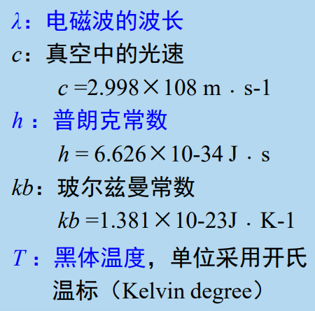
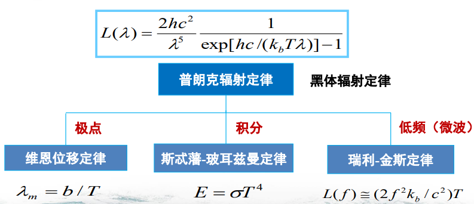
5.5.3 亮温（Brightness Temperature）
如果已知海面发射的辐亮度，那么直接代入普朗克辐射定律经过计算可以获得一个黑体等效辐射温度（blackbody equivalent radiometric temperature）这样获得的温度不是真实的海表面温度（SST）,它被称为海面亮温 （brightness temperature）,或称为黑体温度 （blackbody temperature）T B T_B T B 大气校正 以外，还要在计算中考虑到海水的灰度，即海面发射率 。
频率低于300 GHz的微波 满足瑞利-金斯定律的适用条件。设 T s s t T_{sst} T ss t
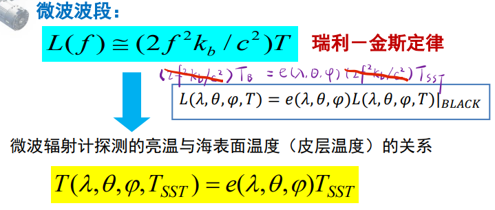
T ( λ , θ , φ , T S S T ) = e ( λ , θ , φ ) T S S T ( 5 − 44 ) T\left( \lambda ,\theta ,\varphi ,T_{SST} \right) =e\left( \lambda ,\theta ,\varphi \right) T_{SST}\ \ \ \ \ \ \ \ \ \ \ \ \ \ \ \ \ \ \ \left( 5-44 \right)
T ( λ , θ , φ , T SST ) = e ( λ , θ , φ ) T SST ( 5 − 44 )
式中处 T ( λ , θ , φ , T S S T ) T\left( \lambda ,\theta ,\varphi ,T_{SST} \right) T ( λ , θ , φ , T SST ) 海表面之上 的微波辐射计能够探测到的亮温 ，或者翻译为亮度温度，它是波长、海表面的热力学温度和立体角的函数。T s s t T_{sst} T ss t
在可见光和红外波段 ，海水接近于黑体，海水的发射率是一个接近1的常数。根据公式（5-37）,将卫星辐射计某通道探测的辐亮度 L ( λ , θ , φ ) L\left( \lambda ,\theta ,\varphi \right) L ( λ , θ , φ ) e ( λ , θ , φ ) e\left( \lambda ,\theta ,\varphi \right) e ( λ , θ , φ ) L b l a c k ( λ , θ , φ ) L_{black}\left( \lambda ,\theta ,\varphi \right) L b l a c k ( λ , θ , φ ) e ( λ , θ , φ ) e\left( \lambda ,\theta ,\varphi \right) e ( λ , θ , φ ) 可见光和红外通道 探测的辐亮度 L ( λ , θ , φ ) L\left( \lambda ,\theta ,\varphi \right) L ( λ , θ , φ ) L b l a c k ( λ , θ , φ ) L_{black}\left( \lambda ,\theta ,\varphi \right) L b l a c k ( λ , θ , φ ) 这些通道探测的亮温接近于真实的海表面温度 。然而，海水在微波波段 的发射率 e ( λ , θ , φ ) e\left( \lambda ,\theta ,\varphi \right) e ( λ , θ , φ ) 微波通道探测的亮温与真实的海表面温度相差极大 。
在某些文献中，许多作者习惯于将传感器某通道探测的海面亮温称为该通道的黑体温度。这是先假定探测目标是黑体，然后将探测目标自发辐射的辐亮度代入黑体辐射定律计算获得的温度。所以，黑体温度也不是真实的目标温度。 在热红外辐射计反演海表面温度的多通道经验算法中，需要多通道测量的黑体温度作为算法的输入数据，输出的海表面温度才是真实的海表面温度。
5.6 菲涅耳反射率（Fresnel Reflectance）
水平极化
R H = cos θ i − n 2 n 1 1 − ( n 1 ′ n 2 ′ ) 2 sin 2 θ i cos θ i + n 2 n 1 1 − ( n 1 ′ n 2 ′ ) 2 sin 2 θ i R_H=\frac{\cos \theta _i-\frac{n_2}{n_1}\sqrt{1-\left( \frac{n_1^{'}}{n_2^{'}} \right) ^2\sin ^2\theta _i}}{\cos \theta _i+\frac{n_2}{n_1}\sqrt{1-\left( \frac{n_1^{'}}{n_2^{'}} \right) ^2\sin ^2\theta _i}}
R H = cos θ i + n 1 n 2 1 − ( n 2 ′ n 1 ′ ) 2 sin 2 θ i cos θ i − n 1 n 2 1 − ( n 2 ′ n 1 ′ ) 2 sin 2 θ i
T H = 2 cos θ i cos θ i + n 2 n 1 1 − ( n 1 ′ n 2 ) 2 sin 2 θ i \mathrm{T}_{H}=\frac{2 \cos \theta_{i}}{\cos \theta_{i}+\frac{n_{2}}{n_{1}} \sqrt{1-\left(\frac{n_{1}^{\prime}}{n_{2}}\right)^{2} \sin ^{2} \theta_{i}}}
T H = cos θ i + n 1 n 2 1 − ( n 2 n 1 ′ ) 2 sin 2 θ i 2 cos θ i
垂直极化
R V = − n 2 n 1 cos θ i − n 2 n 1 1 − ( n 1 ′ n 2 ′ ) 2 sin 2 θ i n 2 n 1 cos θ i + n 2 n 1 1 − ( n 1 ′ n 2 ′ ) 2 sin 2 θ i R_V=\frac{-\frac{n_2}{\text{n}_1}\cos \theta _i-\frac{n_2}{n_1}\sqrt{1-\left( \frac{n_{1}^{'}}{n_{2}^{'}} \right) ^2\sin ^2\theta _i}}{\frac{n_2}{n_1}\cos \theta _i+\frac{n_2}{n_1}\sqrt{1-\left( \frac{n_{1}^{'}}{n_{2}^{'}} \right) ^2\sin ^2\theta _i}}
R V = n 1 n 2 cos θ i + n 1 n 2 1 − ( n 2 ′ n 1 ′ ) 2 sin 2 θ i − n 1 n 2 cos θ i − n 1 n 2 1 − ( n 2 ′ n 1 ′ ) 2 sin 2 θ i
T V = 2 n 2 n 1 cos θ i n 2 n 1 cos θ i + n 2 n 1 1 − ( n 1 ′ n 2 ) 2 sin 2 θ i \text{T}_V=\frac{2\frac{n_2}{n_1}\cos \theta _i}{\frac{n_2}{n_1}\cos \theta _i+\frac{n_2}{n_1}\sqrt{1-\left( \frac{n_{1}^{'}}{n_2} \right) ^2\sin ^2\theta _i}}
T V = n 1 n 2 cos θ i + n 1 n 2 1 − ( n 2 n 1 ′ ) 2 sin 2 θ i 2 n 1 n 2 cos θ i
θ i \theta_i θ i θ t \theta_t θ t
μ 1 \mu_1 μ 1 μ 2 \mu_2 μ 2
n 1 n_1 n 1 n 2 n_2 n 2
n = n ′ − i n ′ ′ n=n^{'}-in^{''} n = n ′ − i n ′′ n ′ n^{'} n ′ n ′ ′ n^{''} n ′′
复折射率 n = ε r μ r ≈ ε r n=\sqrt{\varepsilon_r\mu_r}\approx\sqrt{\varepsilon_r} n = ε r μ r ≈ ε r
对于可见光，在推导菲涅耳公式时可以忽略在上述介质中的衰减，并因此忽略复折射率的虚部。
然而，微波在淡水和海水等介质内传播时衰减很大，不能忽略微波在这些介质中传播中的衰减，故不能忽略复折射率的虚部。
5.6.2 菲涅耳反射率（Fresnel Reflectance）
菲涅耳反射率ρ ρ ρ
ρ ( λ , θ , φ ) = L r ( λ , θ , φ ) L i ( λ , θ , φ ) = ∣ E o r E o i ∣ 2 = ∣ R ∣ 2 \rho \left( \lambda ,\theta ,\varphi \right) =\frac{L_r\left( \lambda ,\theta ,\varphi \right)}{L_i\left( \lambda ,\theta ,\varphi \right)}=\left| \frac{E_{or}}{E_{oi}} \right|^2=|R|^2
ρ ( λ , θ , φ ) = L i ( λ , θ , φ ) L r ( λ , θ , φ ) = ∣ ∣ E o i E or ∣ ∣ 2 = ∣ R ∣ 2
菲涅耳反射率的普适表达式（Xu et al., 2004）
ρ H ( θ ) = ∣ R H ( θ ) ∣ 2 = ∣ cos θ − ε r 2 ε r 1 − ( n 2 n 1 n 1 ′ n 2 ′ ) 2 sin 2 θ cos θ + ε r 2 ε r 1 − ( n 2 n 1 n 1 ′ n 2 ′ ) 2 sin 2 θ ∣ 2 \rho_{H}(\theta)=\left|\mathrm{R}_{H}(\theta)\right|^{2}=\left|\frac{\cos \theta-\sqrt{\frac{\varepsilon_{r 2}}{\varepsilon_{r 1}}-\left(\frac{\mathrm{n}_{2}}{\mathrm{n}_{1}} \frac{n_{1}^{\prime}}{n_{2}^{\prime}}\right)^{2} \sin ^{2} \theta}}{\cos \theta+\sqrt{\frac{\varepsilon_{r 2}}{\varepsilon_{r 1}}-\left(\frac{\mathrm{n}_{2}}{\mathrm{n}_{1}} \frac{n_{1}^{\prime}}{n_{2}^{\prime}}\right)^{2} \sin ^{2} \theta}}\right|^{2}
ρ H ( θ ) = ∣ R H ( θ ) ∣ 2 = ∣ ∣ cos θ + ε r 1 ε r 2 − ( n 1 n 2 n 2 ′ n 1 ′ ) 2 sin 2 θ cos θ − ε r 1 ε r 2 − ( n 1 n 2 n 2 ′ n 1 ′ ) 2 sin 2 θ ∣ ∣ 2
ρ V ( θ ) = ∣ R V ( θ ) ∣ 2 = ∣ ε r 2 ε r 1 cos θ − ε r 2 ε r 1 − ( n 2 n 1 n 1 ′ n 2 ′ ) 2 sin 2 θ ε r 2 ε r 1 cos θ + ε r 2 ε r 1 − ( n 2 n 1 n 1 ′ n 2 ′ ) 2 sin 2 θ ∣ 2 \rho _V\left( \theta \right) =\left| \text{R}_V\left( \theta \right) \right|^2=\left| \frac{\frac{\varepsilon _{r2}}{\varepsilon _{r1}}\cos \theta -\sqrt{\frac{\varepsilon _{r2}}{\varepsilon _{r1}}-\left( \frac{\text{n}_2}{\text{n}_1}\frac{n_{1}^{'}}{n_{2}^{'}} \right) ^2\sin ^2\theta}}{\frac{\varepsilon _{r2}}{\varepsilon _{r1}}\cos \theta +\sqrt{\frac{\varepsilon _{r2}}{\varepsilon _{r1}}-\left( \frac{\text{n}_2}{\text{n}_1}\frac{n_{1}^{'}}{n_{2}^{'}} \right) ^2\sin ^2\theta}} \right|^2
ρ V ( θ ) = ∣ R V ( θ ) ∣ 2 = ∣ ∣ ε r 1 ε r 2 cos θ + ε r 1 ε r 2 − ( n 1 n 2 n 2 ′ n 1 ′ ) 2 sin 2 θ ε r 1 ε r 2 cos θ − ε r 1 ε r 2 − ( n 1 n 2 n 2 ′ n 1 ′ ) 2 sin 2 θ ∣ ∣ 2
海-气界面处：
ε r 1 = 1 , n 1 = ( n 1 ) ′ = 1 \varepsilon_{r1}=1,n_1=(n_1)^{'}=1 ε r 1 = 1 , n 1 = ( n 1 ) ′ = 1
ε r 2 = ε r , n 2 = n , ( n 2 ) ′ = n ′ \varepsilon_{r2}=\varepsilon_r,n_2=n,(n_2)^{'}=n^{'} ε r 2 = ε r , n 2 = n , ( n 2 ) ′ = n ′
ρ H ( θ ) = ∣ R H ( θ ) ∣ 2 = ∣ cos θ − ε r − ( n n ′ ) 2 sin 2 θ cos θ + ε r − ( n n ′ ) 2 sin 2 θ ∣ 2 （ 5 − 58 ） \rho _{\text{H}}\left( \theta \right) =\left| \boldsymbol{R}_{\text{H}}\left( \theta \right) \right|^2=\left| \frac{\cos \theta -\sqrt{\boldsymbol{\varepsilon }_{\text{r}}-\left( \frac{\boldsymbol{n}}{n^{'}} \right) ^2\sin ^2\theta}}{\cos \theta +\sqrt{\boldsymbol{\varepsilon }_{\text{r}}-\left( \frac{\boldsymbol{n}}{n^{'}} \right) ^2\sin ^2\theta}} \right|^2\ \ \ \ \ \ \ \ \ \ \ \ \ \ \ \ \ \ \ \ \ \ \ \ \ \ \ \ \ \ \ \ \text{（}5-58\text{）}
ρ H ( θ ) = ∣ R H ( θ ) ∣ 2 = ∣ ∣ cos θ + ε r − ( n ′ n ) 2 sin 2 θ cos θ − ε r − ( n ′ n ) 2 sin 2 θ ∣ ∣ 2 （ 5 − 58 ）
ρ V ( θ ) = ∣ R V ( θ ) ∣ 2 = ∣ ε r cos θ − ε r − ( n n ′ ) 2 sin 2 θ ε r cos θ + ε r − ( n n ′ ) 2 sin 2 θ ∣ 2 （ 5 − 59 ） \rho _{\text{V}}\left( \theta \right) =\left| \boldsymbol{R}_{\text{V}}\left( \theta \right) \right|^2=\left| \frac{\boldsymbol{\varepsilon }_{\text{r}}\cos \theta -\sqrt{\boldsymbol{\varepsilon }_{\text{r}}-\left( \frac{\boldsymbol{n}}{n^{'}} \right) ^2\sin ^2\theta}}{\boldsymbol{\varepsilon }_{\text{r}}\cos \theta +\sqrt{\boldsymbol{\varepsilon }_{\text{r}}-\left( \frac{\boldsymbol{n}}{n^{'}} \right) ^2\sin ^2\theta}} \right|^2\ \ \ \ \ \ \ \ \ \ \ \ \ \ \ \ \ \ \ \ \ \ \ \ \ \ \ \ \ \ \text{（}5-59\text{）}
ρ V ( θ ) = ∣ R V ( θ ) ∣ 2 = ∣ ∣ ε r cos θ + ε r − ( n ′ n ) 2 sin 2 θ ε r cos θ − ε r − ( n ′ n ) 2 sin 2 θ ∣ ∣ 2 （ 5 − 59 ）
海-气界面处+可见光和近红外波段：
n 2 ≈ ( n 2 ) ′ n_2\approx(n_2)^{'} n 2 ≈ ( n 2 ) ′
ρ H = ∣ cos θ − ε r − sin 2 θ cos θ + ε r − sin 2 θ ∣ 2 （ 5 − 61 ） \rho _{\text{H}}=\left| \frac{\cos \theta -\sqrt{\boldsymbol{\varepsilon }_{\text{r}}-\sin ^2\theta}}{\cos \theta +\sqrt{\boldsymbol{\varepsilon }_{\text{r}}-\sin ^2\theta}} \right|^2\,\,\,\,\,\,\,\,\,\,\,\,\,\,\,\,\,\,\,\,\,\,\,\,\text{（}5-61\text{）}
ρ H = ∣ ∣ cos θ + ε r − sin 2 θ cos θ − ε r − sin 2 θ ∣ ∣ 2 （ 5 − 61 ）
ρ V = ∣ ε r cos θ − ε r − sin 2 θ ε r cos θ + ε r − sin 2 θ ∣ 2 （ 5 − 62 ） \rho _{\text{V}}=\left| \frac{\boldsymbol{\varepsilon }_{\text{r}}\cos \theta -\sqrt{\boldsymbol{\varepsilon }_{\text{r}}-\sin ^2\theta}}{\boldsymbol{\varepsilon }_{\text{r}}\cos \theta +\sqrt{\varepsilon _{\text{r}}-\sin ^2\theta}} \right|^2\ \ \ \ \ \ \ \ \ \ \text{（}5-62\text{）}
ρ V = ∣ ∣ ε r cos θ + ε r − sin 2 θ ε r cos θ − ε r − sin 2 θ ∣ ∣ 2 （ 5 − 62 ）
菲涅耳反射率的传统表达式，只适用于可见光和近红外波段, 对微波波段不适用
6 散射和吸收
6.1 描述衰减的术语
复折射率
表达式 ：
n = n ′ − i n ′ ′ \boldsymbol{n}=n'-in''
n = n ′ − i n ′′
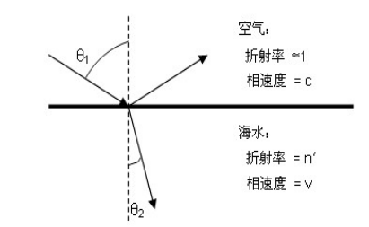
虚部 n ′ ′ n'' n ′′
► 微波波段的复折射率（从德拜方程获得，其他波段，需从实验获取）:
n = ε r ε r 表示海水的相对电容率 \boldsymbol{n}=\sqrt{\boldsymbol{\varepsilon }_r}\,\,\,\,\,\,\,\,\,\,\,\,\,\,\,\,\,\,\,\,\,\,\boldsymbol{\varepsilon }_r\text{表示海水的相对电容率}
n = ε r ε r 表示海水的相对电容率
► 与热红外波段和微波波段相比，纯水在可见光波段的复折射率虚部很小，意味着衰减更慢，传播的更远。
皮层深度（Skin Depth）
d s k i n d_{skin} d s kin z = d z=d z = d 1 / e 1/e 1/ e z = 0 z=0 z = 0 z = d z=d z = d
皮层深度的物理意义？
只有接近海面非常薄的水层的水分子发射的电磁波能够溢出水面,所以表面薄层水分子的平均温度决定了海表面的辐射强度，代表了热红外辐射计或者微波辐射计探测的海表面温度。
使用辐射计遥感探测的只是海洋的皮层温度。与依靠浮标或水桶法在水下大约0.3~1m处测量的次表层体积海表面温度有不可忽略的差异。
图(a)表示无论夜间还是白天，当强风（U10 >6 m/s） 时充分混合的上表层温度剖面；图(b)表示在白天强日照和弱风条件下层化的上表层温度剖面。
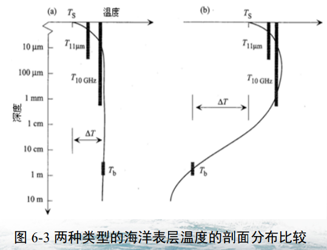
T 11 µ m T_{11µm} T 11µ m
T 10 G H z T_{10GHz} T 10 G Hz
T b T_b T b
T s T_s T s
Δ T ΔT Δ T ∣ T s − T b ∣ |T_s-T_b| ∣ T s − T b ∣
穿透深度（Penetration Depth）
定义 ：辐照度衰减为初始值的 1 / e 1/e 1/ e Z 90 Z_{90} Z 90
用于描述可见光和红外光在海水中的衰减。
因为辐照度（电磁波能量）与电场强度的平方成比例，所以辐照度的衰减系数%是电场强度 衰减系数 k a k_a k a
z 90 = d s k i n 2 z_{90}=\frac{d_{skin}}{2}
z 90 = 2 d s kin
穿透深度有多深呢？
穿透深度与水体组成成分、波长有关
波段
穿透深度
490nm(蓝绿光)
30m
430~480nm(蓝)/500~580nm(绿)
20m
400~430nm/590~610nm
10m
620~700nm(红)
1~3m
衰减系数（ Attenuation Coefficient）
定义 : 可由朗伯-比尔透射定律的微分形式计算
k a ( λ ) = − 1 L ( λ ) d L ( λ , z ) d z L ( λ , z ) 是辐亮度 k_a\left( \lambda \right) =-\frac{1}{L\left( \lambda \right)}\frac{dL\left( \lambda ,z \right)}{dz}\ \ \ \ \ \ L\left( \lambda ,z \right) \text{是辐亮度}
k a ( λ ) = − L ( λ ) 1 d z d L ( λ , z ) L ( λ , z ) 是辐亮度
光学厚度（Optical Thickness）
定义 ：衰减系数沿传播路径上的积分，用 τ a \tau _a τ a
τ a ( λ , z ) = ∫ z 0 z k a ( λ ) d z \tau _a\left( \lambda ,z \right) =\int_{z_0}^z{k_a\left( \lambda \right) dz}
τ a ( λ , z ) = ∫ z 0 z k a ( λ ) d z
τ a \tau _a τ a z 0 z_0 z 0 z z z z 0 z_0 z 0 z z z
体积散射函数（Volume Scattering Function)
体积散射函数 β β β m − 1 ⋅ s r − 1 m^{-1}\cdot sr^{-1} m − 1 ⋅ s r − 1
定义式：
β ( λ , θ ) = − 1 Φ ( λ ) d 2 Φ s c ( λ , θ ) d r d Ω \beta(\lambda, \theta)=-\frac{1}{\varPhi(\lambda)} \frac{d^{2} \varPhi_{s c}(\lambda, \theta)}{d r d \Omega}
β ( λ , θ ) = − Φ ( λ ) 1 d r d Ω d 2 Φ sc ( λ , θ )
Φ \varPhi Φ Φ s c \varPhi_{sc} Φ sc d Ω d\varOmega d Ω
体积散射系数 ：
k s c ( λ ) = ∫ Ω β ( λ , θ ) d Ω = 2 π ∫ 0 π β ( λ , θ ) sin θ d θ k_{s c}(\lambda)=\int_{\Omega} \beta(\lambda, \theta) d \varOmega=2 \pi \int_{0}^{\pi} \beta(\lambda, \theta) \sin \theta d \theta
k sc ( λ ) = ∫ Ω β ( λ , θ ) d Ω = 2 π ∫ 0 π β ( λ , θ ) sin θ d θ
米氏散射和瑞利散射
散射 ：由于介质中存在的微小粒子或介质分子对光的作用，使光束偏离原来的传播方向而向四周传播的现象。
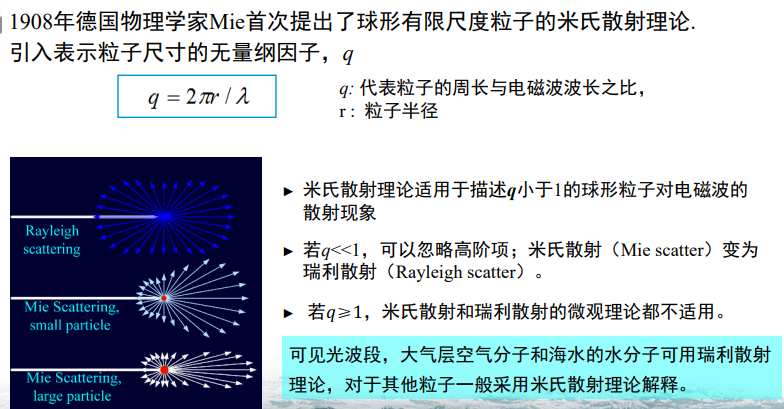
瑞利散射是由极小微粒（例如尺度远小于可见光波长的气体分子和水分子 ，或者尺度远小于微波波长的气溶胶粒子 ）产生的散射。
依据公式（省略 ）,瑞利散射的强度与波长的四次方成反比 。已知可见光的波长范围是400 nm（蓝紫光）到700 nm（红光），红光波长是蓝紫光波长的1. 75倍，因此蓝紫光散射强度接近红光散射强度的十倍。 在太阳光谱中蓝光波段的能量远大于紫光波段的能量，加上大气中的分子（氮气和氧气分子）对蓝光的瑞利散射效应，所以我们通过散射光看到的天空是蓝色 的。
6.2 辐射传输方程
6.2.1 大气辐射传输方程
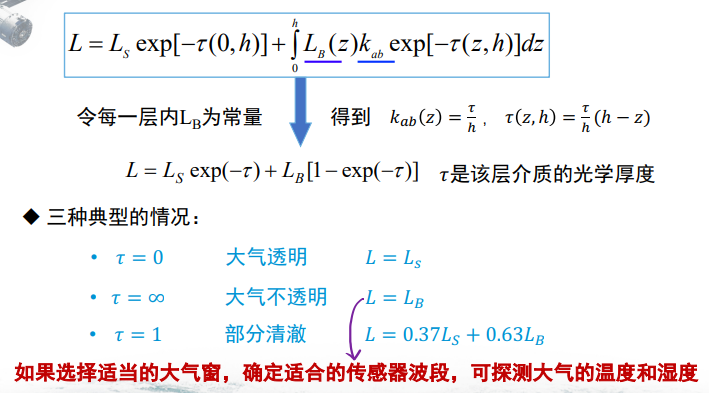
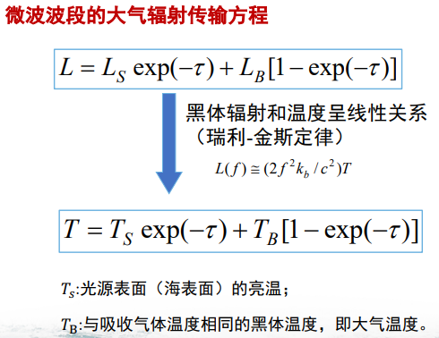
6.2.2 有边界的辐射传输方程
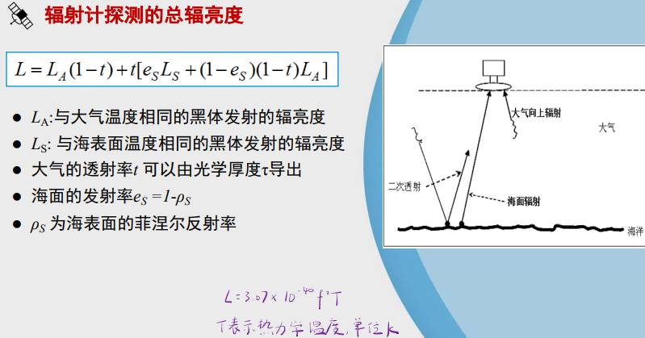
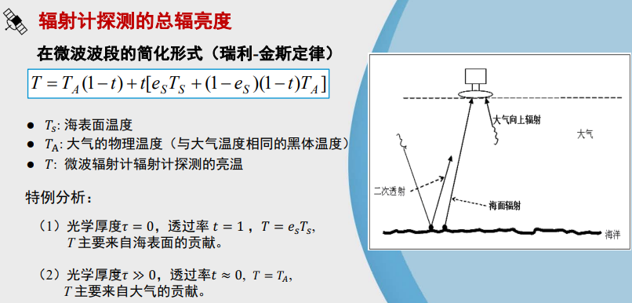
6.2.3 大气窗
定义 ：大气透过率比较大的波段
波段3.7～4.1µm和10～12µm存在两个热红外窗口，是用于星载辐射计探测海面温度的重要波段。
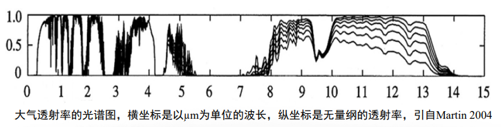
大气窗的分布是传感器设计的重要依据：
探测海面的传感器的波段必须设计在大气窗内
探测大气温度或湿度垂直分布的传感器应该至少有一个波段设计在大气窗外， 即选择大气窗外氧气或水蒸气的某一个吸收带。
大气成分对不同波段电磁波衰减的主要作用：
在可见光和红外波段：
辐射衰减的第一因素：气溶胶散射
辐射衰减的第二因素：水蒸气吸收
次要因素：臭氧吸收
在微波波段：
辐射衰减的第一因素：水蒸气吸收
辐射衰减的第二因素：氧气吸收
辐射衰减的可忽略因素：气溶胶散射
9 微波辐射计遥感原理与应用
9.1 微波辐射计
9.1.1 微波辐射计的特点
优点 ：
全天候观测
瑞利-金斯定律 L ( f ) ≅ ( 2 f 2 k b / c 2 ) T L\left( f \right) \cong \left( 2f^2k_b/c^2 \right) T L ( f ) ≅ ( 2 f 2 k b / c 2 ) T
局限性 ：
地球表面自发辐射的微波能量比热红外波段低—>设计水平和工艺水平要求更高
空间分辨率较热红外辐射计低 ∼ λ H D \sim \frac{\lambda H}{D} ∼ D λ H
微波辐射计的探测要素
9.1.2 典型的微波辐射计及分类
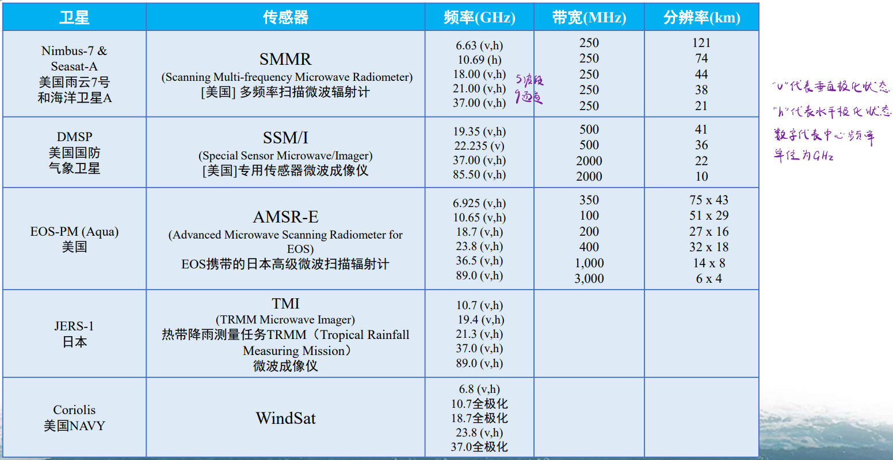
按测量目的分类：
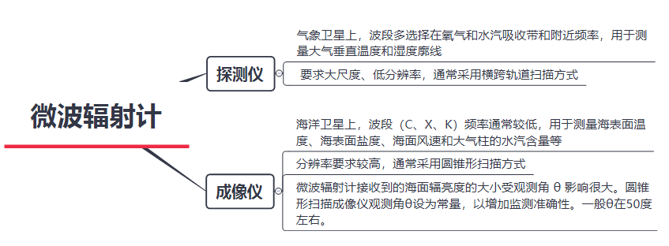
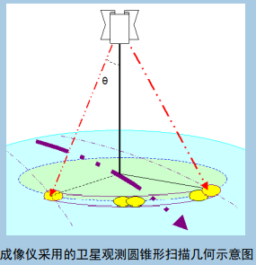
9.2 海面的微波发射率
9.2.1 平静海面的微波发射率
微波测量海表面盐度：
首选频率：L波段1.4GHz
首选极化状态：垂直极化
首选观测角：0～10°
上述条件下，天线探测的亮温几乎不受海面风速和海浪的影响
9.2.2 粗糙海面的微波发射率
辐射计接收到的海面辐射用辐亮度 L L L T b T_b T b T s T_s T s
T b = e T s ( 9 − 11 ) T_b=eT_s\ \ \ \ \ \ \ \ \ \ \ \ \ \ \ \ \ \ \ \ \ \ \ \ \ \left( 9-11 \right)
T b = e T s ( 9 − 11 )
式中，e ( θ , f , ξ , T s , S , U 10 , φ ) e\left( \theta ,f,\xi ,T_s,S,U_{10},\varphi \right) e ( θ , f , ξ , T s , S , U 10 , φ ) θ \theta θ f f f ξ \xi ξ T s T_s T s S s S_s S s U 10 U_{10} U 10 φ \varphi φ
9.2.3 基于小斜率近似的海面发射率模型
真实海洋的微波辐射:
由平静海面的辐射以及其上覆盖的海浪的辐射共同组成。
粗糙海面的海面亮温 T b T_b T b
T b = e T s = e 0 T s + ( e − e 0 ) T s = e 0 T s + Δ e T s ( 9 − 13 ) T_b=eT_s=e_0T_s+\left( e-e_0 \right) T_s=e_0T_s+\Delta eT_s\ \ \ \ \ \ \ \ \ \ \ \ \ \ \ \ \ \ \ \ \ \ \ \ \ \left( 9-13 \right)
T b = e T s = e 0 T s + ( e − e 0 ) T s = e 0 T s + Δ e T s ( 9 − 13 )
式中，T s T_s T s e e e e 0 e_0 e 0 ρ \rho ρ ε r \varepsilon_r ε r Δ e \Delta e Δ e Δ T h , v = Δ T s \Delta T_{h,v}=\Delta T_s Δ T h , v = Δ T s h h h v v v
基于小斜率近似的海面发射率模型，海面盐度遥感的一些初步结论：
粗糙海面的亮温不仅是海表面温度和海表面盐度的函数，而且是海面风速和风向的函数。
风速对 Δ T h \Delta T_h Δ T h Δ T v \Delta T_v Δ T v
使用较小的天顶角 （ θ ≤20°）探测海面可消除风向对盐度反演的影响。
使用双极化微波辐射计 探测的海面亮温之和来反演海表面盐度，有利于消除风向的干扰，减少风向不确定性造成的反演误差，提高海表面盐度的反演精度。
9.2.4 海面发射率的SSM/I算法
根据公式(9 -13),如果已知微波辐射计探测到的海面亮温数据和对应的浮标现场测量数据，使用统计分析方法可以获得在微波辐射计各个波段的海面发射率与风速、海表面温度以及观测角的函数关系。依据该多波段函数关系，可以反演海上风速和海表面温度，故称之为 SSM/I \text{SSM/I} SSM/I SSM/I \text{SSM/I} SSM/I
e = e 0 + Δ e ( 9 − 16 ) e=e_0+\Delta e\ \ \ \ \ \ \ \ \ \ \ \ \ \ \ \ \ \ \left( 9-16 \right)
e = e 0 + Δ e ( 9 − 16 )
式中，e 0 e_0 e 0 Δ e \Delta e Δ e
平静海面的发射率 e 0 e_0 e 0 ρ \rho ρ e 0 e_0 e 0 温度 和观测角 的多项式拟合，Wentz(1997)获得了平静海面发射率 e 0 e_0 e 0
e 0 = 1 T s [ ( ε 0 + ε 1 t + ε 2 t 2 + ε 3 t 3 ) + q ( ε 4 + ε 5 t + ε 6 q + ε 7 t 2 ) ] ( 9 − 17 ) e_0=\frac{1}{T_s}\left[ \left( \varepsilon _0+\varepsilon _1t+\varepsilon _2t^2+\varepsilon _3t^3 \right) +q\left( \varepsilon _4+\varepsilon _5t+\varepsilon _6q+\varepsilon _7t^2 \right) \right] \ \ \ \ \ \ \ \ \ \ \ \ \ \ \ \ \ \ \ \ \ \ \left( 9-17 \right)
e 0 = T s 1 [ ( ε 0 + ε 1 t + ε 2 t 2 + ε 3 t 3 ) + q ( ε 4 + ε 5 t + ε 6 q + ε 7 t 2 ) ] ( 9 − 17 )
式中，海表面温度 T s T_s T s K \text{K} K t t t ° C °C ° C t / ° C = T s / K − 273.16 t/°C=T_s/\text{K}-273.16 t /° C = T s / K − 273.16 q = θ − 51 ° q=\theta-51° q = θ − 51° 48 ° < θ < 55 ° 48°<\theta<55° 48° < θ < 55° SSM/I \text{SSM/I} SSM/I ( ε 0 , ε 1 , ε 2 , ε 3 , ε 4 , ε 5 , ε 6 , ε 7 ) (\varepsilon_0,\varepsilon_1,\varepsilon_2,\varepsilon_3,\varepsilon_4,\varepsilon_5,\varepsilon_6,\varepsilon_7) ( ε 0 , ε 1 , ε 2 , ε 3 , ε 4 , ε 5 , ε 6 , ε 7 ) 162.53 E + 0 162. 53\text{E}+0 162.53 E + 0 162.53 × 1 0 0 162.53\times10^0 162.53 × 1 0 0 − 25.70 E − 2 -25.70\text{E}-2 − 25.70 E − 2 − 25.70 × 1 0 − 2 -25.70\times10^{-2} − 25.70 × 1 0 − 2
在 48 ° < θ < 55 ° 48°<\theta<55° 48° < θ < 55° Δ e \Delta e Δ e
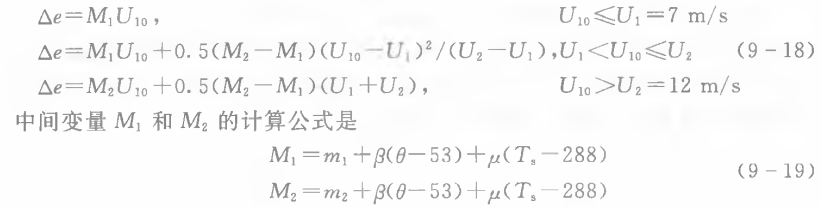
表 9-5 还列出了上述公式中对应每个通道的全部系数 ( β , μ , m 1 , m 2 ) (\beta,\mu,m_1,m_2) ( β , μ , m 1 , m 2 ) SSM/I \text{SSM/I} SSM/I T b T_b T b SSM/I \text{SSM/I} SSM/I 22H \text{22H} 22H T b T_b T b
9.3 海面温度和风速的反演算法
9.3.1 微波辐射计的SST反演算法
D-矩阵方法（D-matrix method） （统计的逆方法）
假定SST与各个通道探测的亮温之间有简单的线性关系， 可应用于多种微波辐射计反演海表面温度。
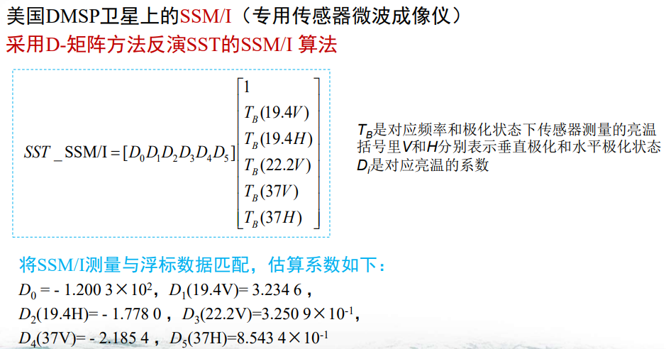
9.3.2 微波辐射计的海面风速反演算法
SSM/I海面风速ERT算法 （美国环境研究和技术公司 ）—> SSM/I-GSW算法 （Goodberlet,1989 ）—> SSM/I-GSWP算法 （Petty，1993 ）
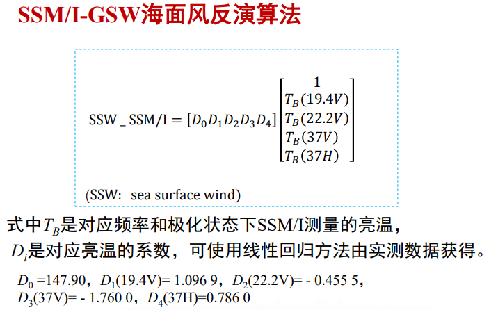
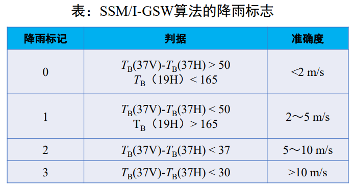
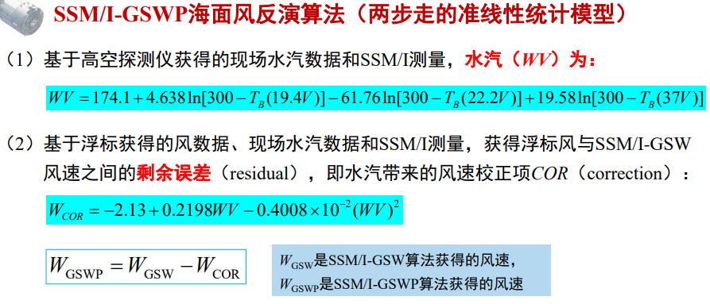
有50万以上匹配数据证实了上述两种算法(包括SSM/I-GSW算法和SSM/I-GSWP算法)在风速小于15 m/s条件下反演准确度达到2 m/s。
10 散射计遥感原理与应用
10.1 散射计
Remote Sensing System网站整合了部分散射计和微波辐射计的风场产品，并提供沿轨风场产品的预览图，方便大家快速查询与下载，例如，如果我们想知道2019年9月1日ASCAT观测的某个海域的风场状况，输入日期和区域就可以看到ASCAT当天升轨或降轨运行时所观测的海面风场。
Remote Sensing System 10.2 标准化雷达后向散射截面
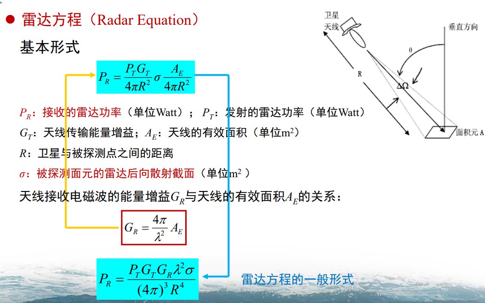
由于 σ 0 σ_0 σ 0 σ 0 [ dB ] σ_0[\text{dB}] σ 0 [ dB ]
σ 0 [ dB ] = 10 log ( σ 0 ) \sigma _0\left[ \text{dB} \right] =10\log \left( \sigma _0 \right)
σ 0 [ dB ] = 10 log ( σ 0 )
式中左侧代表用 dB \text{dB} dB σ 0 σ_0 σ 0 dB \text{dB} dB
例如，如果 σ 0 σ_0 σ 0 σ 0 σ_0 σ 0 dB \text{dB} dB σ 0 σ_0 σ 0 σ 0 σ_0 σ 0
注意，分贝（dB \text{dB} dB
散射计接收的NRCS包括两个部分 ：
(1)由电磁波在海面上的镜面反射 机制产生
(2)由电磁波与海面波浪（波长尺度为cm）之间的 Bragg共振散射 机制产生
σ 0 = a σ 0 ( specular reflection ) + σ 0 ( Bragg-resonant scattering ) \sigma_0=a\sigma_0(\text{specular reflection})+\sigma_0(\text{Bragg-resonant scattering})
σ 0 = a σ 0 ( specular reflection ) + σ 0 ( Bragg-resonant scattering )
a a a
镜面反射（Specular reflection）
► 由海表面上许多像镜子似的小平面的反射产生
► 小平面的尺度 > 被反射的电磁波的波长粗糙海面上的许多小平面对电磁波的镜面反射也被称为“镜点散射 ”
根据镜面反射理论
► 传感器能够接收在海表面上像镜子似的每个小平面反射的电磁波
► 相对于这些小平面，雷达波束的当地入射角 θ = 0 θ = 0 θ = 0
镜面反射产生的 N R C S σ 0 NRCS\ σ_0 NRCS σ 0
σ 0 ( U 10 , θ , φ ) = π sec 4 θ ⋅ f ( ζ x , ζ y ) ⋅ ρ ( θ l o c a l = 0 ) \sigma _0\left( U_{10},\theta ,\varphi \right) =\pi \sec ^4\theta \cdot f\left( \zeta _x,\zeta _y \right) \cdot \rho \left( \theta _{local}=0 \right)
σ 0 ( U 10 , θ , φ ) = π sec 4 θ ⋅ f ( ζ x , ζ y ) ⋅ ρ ( θ l oc a l = 0 )
U 10 U_{10} U 10
θ θ θ
φ φ φ
ρ ( θ l o c a l = 0 ) ρ(θ_{local=0}) ρ ( θ l oc a l = 0 )
θ l o c a l θ_{local} θ l oc a l
f ( ζ x , ζ y ) f (ζ_x ,ζ_y) f ( ζ x , ζ y ) 海表面斜率（ sea surface slope）的联合概率密度函数
ζ x ζ_x ζ x ζ y ζ_y ζ y ζ x = ∂ ζ ∂ x ζ y = ∂ ζ ∂ y ζ : 波面高度 ( sea surface elevation ) \zeta _x=\frac{\partial \zeta}{\partial x}\ \ \zeta _y=\frac{\partial \zeta}{\partial y}\ \ \ \zeta :\text{波面高度}\left( \text{sea\ surface\ elevation} \right) ζ x = ∂ x ∂ ζ ζ y = ∂ y ∂ ζ ζ : 波面高度 ( sea surface elevation )
镜面散射或镜点散射模型
当雷达波近似于垂直入射（也即入射角 θ ≈ 0 \theta\approx0 θ ≈ 0 θ \theta θ
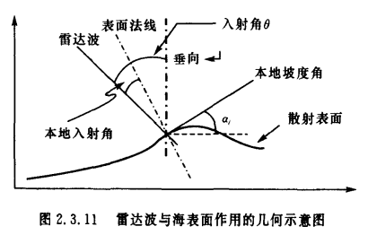
对于朝向 x x x
σ 0 = π ⋅ sec 4 θ ⋅ ∣ R ( 0 ) ∣ 2 ⋅ p ( tan θ , 0 ) = π sec 4 θ ρ ( 0 ) p ( tan θ , 0 ) ( 2 − 3 − 58 ) \sigma _0=\pi \cdot \sec ^4\theta \cdot \left| R\left( 0 \right) \right|^2\cdot p\left( \tan \theta ,0 \right) =\pi \sec ^4\theta \rho \left( 0 \right) p\left( \tan \theta ,0 \right) \ \ \ \ \ \ \left( 2-3-58 \right) \ \
σ 0 = π ⋅ sec 4 θ ⋅ ∣ R ( 0 ) ∣ 2 ⋅ p ( tan θ , 0 ) = π sec 4 θρ ( 0 ) p ( tan θ , 0 ) ( 2 − 3 − 58 )
式中 θ \theta θ R ( 0 ) R(0) R ( 0 ) ρ ( 0 ) \rho(0) ρ ( 0 ) p ( tan θ , 0 ) = p ( ζ x , ζ y ) p\left( \tan \theta ,0 \right) =p\left( \zeta _x,\zeta _y \right) p ( tan θ , 0 ) = p ( ζ x , ζ y ) x x x ζ x \zeta_x ζ x y y y ζ y \zeta_y ζ y 2 π r c o s 3 θ / λ ≫ 1 2\pi rcos^3\theta/\lambda\gg1 2 π rco s 3 θ / λ ≫ 1 r r r r 1 、 r 2 r_1、r_2 r 1 、 r 2
ζ x = ∂ ζ ∂ x ζ y = ∂ ζ ∂ y ( 2 − 3 − 59 ) \zeta _x=\frac{\partial \zeta}{\partial x}\ \ \zeta _y=\frac{\partial \zeta}{\partial y} \ \ \ \ \ \ \ \ (2-3-59)
ζ x = ∂ x ∂ ζ ζ y = ∂ y ∂ ζ ( 2 − 3 − 59 )
式中 ζ \zeta ζ
由于在大多数情况下，平均表面坡度小于30°,因此，镜面点散射(Specular-Point Scatter)理论仅适用于海浪斜面垂直方向附近的小入射角范围，而平面元模型只适用于接近垂直入射的情况。当入射角度较大时，表面散射受小尺度粗糙度效应支配，此时无镜面点散射，在所有角度上都可以观测散射。在这种情况下通常使用Bragg模型。
10.3 电磁波在粗糙海面的散射
两尺度散射模型（Two-Scale Scattering Model）
考虑到海面上长波和短波这两个尺度波浪的客观存在，学者们发展了组合的表面散射模型（Composite-surface scattering model）来计算Bragg散射产生的NRCS，也称两尺度散射模型 （Two-scale scattering model）
计算思路：
（1）先计算出局地小面积元上重力毛细波的Bragg散射的贡献 ——考虑了长波的倾斜引起的局地入射角和极化状态的改变
（2）利用海面斜率的概率密度函数，对各个局地小面积元积分
σ 0 ( θ ) = ∫ − ∞ ∞ ∫ − ∞ ∞ σ 0 ( θ i ) f ( tan ψ , tan δ ) d ( tan ψ ) d ( tan δ ) \sigma _0\left( \theta \right) =\int_{-\infty}^{\infty}{\int_{-\infty}^{\infty}{\sigma _0\left( \theta _i \right) f\left( \tan \psi ,\tan \delta \right) d\left( \tan \psi \right) d\left( \tan \delta \right)}}
σ 0 ( θ ) = ∫ − ∞ ∞ ∫ − ∞ ∞ σ 0 ( θ i ) f ( tan ψ , tan δ ) d ( tan ψ ) d ( tan δ )
θ i θ_i θ i ψ ψ ψ δ δ δ x x x y y y t a n ψ tanψ t an ψ t a n δ tanδ t an δ x x x y y y
10.4 海面风场反演模型
理论模型
（基于理论公式计算 σ 0 \sigma_0 σ 0
利用前面介绍的计算 σ 0 \sigma_0 σ 0 σ 0 \sigma_0 σ 0
在公式 σ 0 = σ 0 ( U 10 , θ , φ ) σ_0= σ_0(U_{10},θ,φ) σ 0 = σ 0 ( U 10 , θ , φ )
已知：
标准化雷达后向散射截面 σ 0 σ_0 σ 0
入射角 θ θ θ
未知：
风速 U 10 U_{10} U 10
风向 φ φ φ
→ 至少需要2个方程
以ERS1/2携带的C波段/5.3GHz的散射计为例，
► 拥有3个天线，每个天线相对于每个探测点的入射角各不相同
► 3对( U 10 , φ ) (U_{10}, φ) ( U 10 , φ ) σ 0 σ_0 σ 0
► 在每个探测点，一般可以获得多对 ( U 10 , φ ) (U10, φ) ( U 10 , φ )
经验模型
基于具有VV极化方式的散射计测量数据和浮标同步风场观测数据的拟合，学者们 提出了标准化雷达后向散射基面 σ 0 σ_0 σ 0
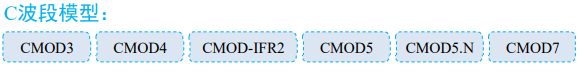
散射计风场反演精度：
► 中低风速范围内（4-24 m/s），风速反演精度优于 2m/s，相对平均误差达到10%
► 风向反演精度优于20°
CMOD5.N经验模型 (Hersbach, 2010)
σ 0 = B 0 ( 1 + B 1 cos φ + B 2 cos 2 φ ) 1.6 \sigma _0=B0\left( 1+B1\cos \varphi +B2\cos 2\varphi \right) ^{1.6}
σ 0 = B 0 ( 1 + B 1 cos φ + B 2 cos 2 φ ) 1.6
φ \varphi φ
B 0 、 B 1 、 B 2 B_0、B_1、B_2 B 0 、 B 1 、 B 2
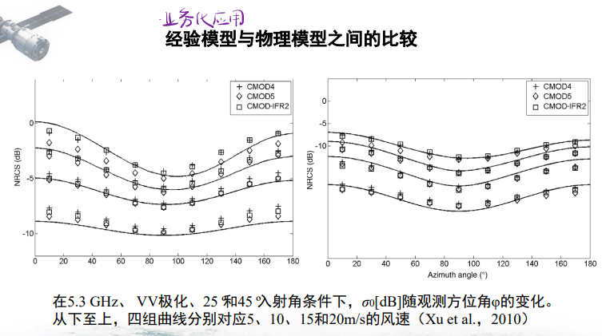
11 高度计遥感原理与应用
11.1.1 高度计与海面几何学（Radar Altimeter & Geometry ）
高度计观测的海洋动力参数：
海表面高度SSH（Sea surface height）
有效波高SWH（Significant wave height）
海表面风速（Sea surface wind speed）
海流（Ocean currents）
潮汐（Tides）
海冰（Sea ice）
地球结构和海洋重力场
距离(Range)
距离R ：卫星距海表面的高度
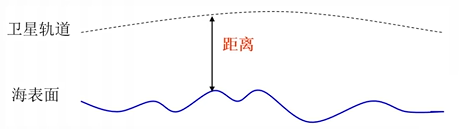
$$
R=\frac{c\cdot \Delta t}{2}
$$
$c$：电磁波的传播速度
Δ t \Delta t Δ t
大地水准面(Geoid)
大地水准面 ：指与平均海表面最接近的地球等势面
The sea surface that would exist without any motion.
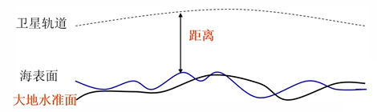
参考椭球面（Reference ellipsoid）
参考椭球面 ：最接近地球表面形状的一个椭球面
其赤道半径是6378.1363km，偏心率（扁率）是1/298.257
大地水准面起伏（Geoid undulation）/大地水准面高度
大地水准面起伏 h g h_g h g /大地水准面高度 ：大地水准面相对于参考椭球面的位移
地球质量分布不匀 → h g h_g h g h g h_g h g h g h_g h g
海面地形/海表面动力高度（Sea Surface Dynamic Height）
海面地形 （Ocean surface topography）/海表面动力高度 （Sea Surface Dynamic Height）：海表面相对于大地水准面的位移
是由于海流、潮汐和中尺度涡等海水运动引起的
其幅度的量级为1m
海表面动力高度 h d h_d h d
h d = S − R − h g − ∑ i e i h_d=S-R-h_g-\sum_i^{}{e_i}
h d = S − R − h g − i ∑ e i
S S S
R R R
h g h_g h g h d h_d h d
e i e_i e i i i i
海表面高度（Sea surface height ）
海表面高度 ：海表面到参考椭球面的距离
$$
H=S-R\ \ \ \ \ \ \ \ \ 是一个容易计算的物理量
$$
在海洋学研究中，我们往往更关注海表面高度的变化情况，即：
海表面异常（Sea surface anomaly，SSA）或海表面高度异常（Sea surface height anomaly，SSHA）
海表面异常（Sea surface anomaly，SSA） 海表面异常 ：海表面高度与长期平均海表面高度的差
S S A = S S H − S S H ‾ SSA=SSH-\overline{SSH}
SS A = SS H − SS H
= ( h d + h g ) ( h d ‾ + h g ‾ ) + ∑ i ( e i − e i ‾ ) =\left( h_d+h_g \right) \left( \overline{h_d}+\overline{h_g} \right) +\sum_i^{}{\left( e_i-\overline{e_i} \right)}
= ( h d + h g ) ( h d + h g ) + i ∑ ( e i − e i )
= ( h d − h d ‾ ) + ∑ i ( e i − e i ‾ ) ≈ h d − h d ‾ =\left( h_d-\overline{h_d} \right) +\sum_i^{}{\left( e_i-\overline{e_i} \right) \approx h_d-\overline{h_d}}
= ( h d − h d ) + i ∑ ( e i − e i ) ≈ h d − h d
SSH和SSA是地面数据处理和分发中心通常向用户提供的高度计产品
一般地，遥感业务部门给出的海表面异常SSA已经剔除了潮汐的影响 （根据潮汐模式计算）
海平面高度（Sea level height）
海平面（Sea level）：高潮时的海表面和低潮时的海表面之间的中值
海平面高度SLH（Sea level height）：海平面相对于参考椭球面（或其它任何参考标准面）的高度
海平面异常SLA （Sea level anomaly）：海平面相对于平均海平面的高度差
注：去除了潮汐影响的海表面异常SSA ≈ 海平面异常SLA
11.1.2 海面动力高度 （Sea Surface Dynamic Height）
海洋动力学过程对应的典型的海面动力高度变化
海洋动力学过程
典型的海表面变化
西边界流
130cm/100km
大环流
50cm/300km
东边界流
30cm/100km
中尺度涡
25cm/100km
涡旋
100cm/100km
赤道流
30cm/5000km
潮汐
100cm/5000km
130cm/100km：在100km宽的中纬度海域海流横向可产生130cm的动力高度差
平均动力高度/动力地形 ： 平均海表面高度与大地水准面之差
—代表大尺度平均海流引起的海表面高度变化
11.2.1 有效波高与风速观测 （Significant Wave Height & Wind Speed ）
11.2.2 高度计数据产品与应用 （Data Products & Applications）